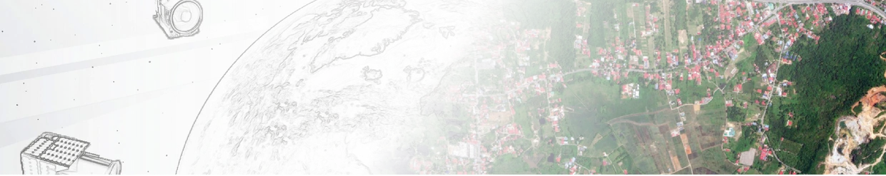
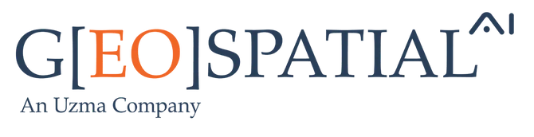
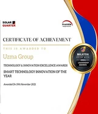
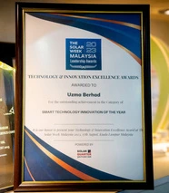
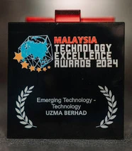
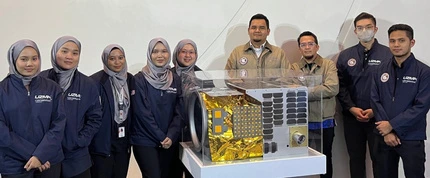
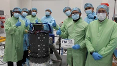
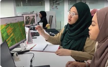
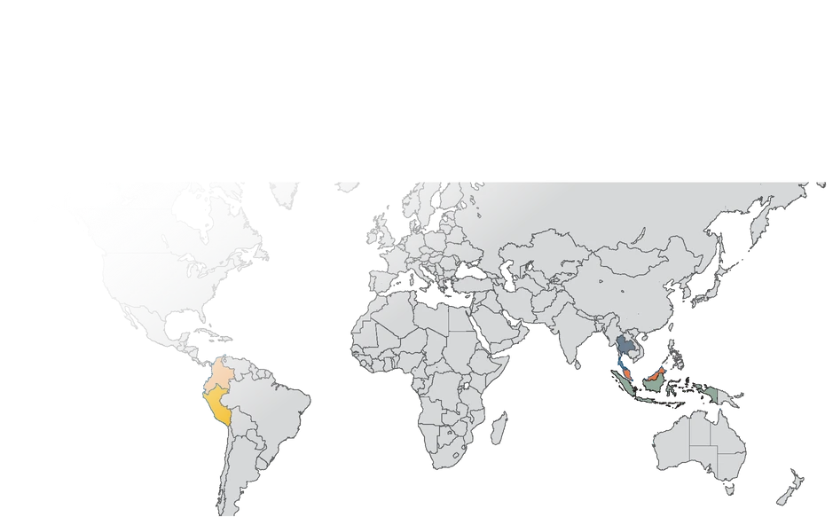

Geospatial AI Sdn Bhd, founded in 2021, is a wholly owned subsidiary of Uzma Berhad and a provider of AI-driven satellite-based enterprise solutions for large-scale data capture and analysis.

What we do
- Big data: satellite images and spatial data services for commercial, government and defense applications, including optical imagery, SAR and digital elevation.
- Tailored platform: intuitive, secured platforms developed around end-user needs and requirements.
- Analytics & solution: AI-driven solutions and expert remote sensing analysis that turn geospatial datasets into critical insights.
- Professional training courses: consultancy, bespoke remote sensing and GIS training, and off-the-shelf courses tailored to sector needs.
Awards & achievements
- 2021: Satellite-Driven Flood Risk Assessment and Geohazard Identification for Solar Farms.
- 2023: Advanced Ground Movement Risk Assessment in Solar Farm Environments Using Satellite-Based InSAR Technology.
- 2024: Malaysia Technology Excellence Award — Emerging Technology for the UzmaSAT-1 Programme.
Our reach
1,270,637 hectares analysed across 7 countries: Colombia, Ecuador, Peru, Libya, Malaysia, Indonesia and Thailand. Memberships shown in the brochure: IGRSM and IAF.
In pictures
{kind=link}

{kind=link}
{kind=link}

{kind=link}
{kind=link}

{kind=link}
{kind=link}

{kind=link}
{kind=link}

{kind=link}
{kind=link}
{kind=link}
{kind=link}

{kind=link}
{kind=link}

{kind=link}
{kind=link}

{kind=link}
{kind=link}

{kind=link}
{kind=link}
{kind=link}
{kind=link}
{kind=link}
Read the complete source transcript
ABOUT US WHAT WE DO
& ACHIEVEMENTS
BIG DATA
YEAR 2021
TAILORED PLATFORM
Geospatial AI Sdn Bhd, founded in 2021, is a leading geospatial analytics provider, leveraging AI-driven satellite-based enterprise solution for super large-scale data capture and analysis.
Our expertise lies in utilizing satellite imagery and cutting-edge technology to provide actionable insights and information about various aspects of Earth, from urban planning to environmental monitoring.
A member of :
YEAR 2023 Advanced Ground Movement Risk Assessment in Solar Farm Environments Using Satellite- Based InSAR Technology
ANALYTICS & SOLUTION
PROFESSIONAL TRAINING COURSES
YEAR 2024 Malaysia Technology Excellence Award – Emerging Technology for UzmaSAT-1 Programme
Satellite- Driven Flood Risk Assessment and Geohazard Identification for Solar Farms
Colombia Ecuador Peru Libya
Malaysia Indonesia Thailand
Provide satellite images and any spatial data services for various commercial, government and defense applications.
Intuitive and secured platform development tailored to end-user needs and requirements
Utilizing AI-driven solution and expert remote sensing analysis to transform geospatial dataset to critical insights.
Provide consultancy and bespoke training course on remote sensing and GIS for various sectors.
1,270,637 Hectares Analysed
A wholly owned subsidiary of Uzma Berhad
AWARDS
7Countries
Off-the-shelf and bespoke training tailored to your needs.
Example: Satellite imagery (Optical & SAR) & Digital Elevation